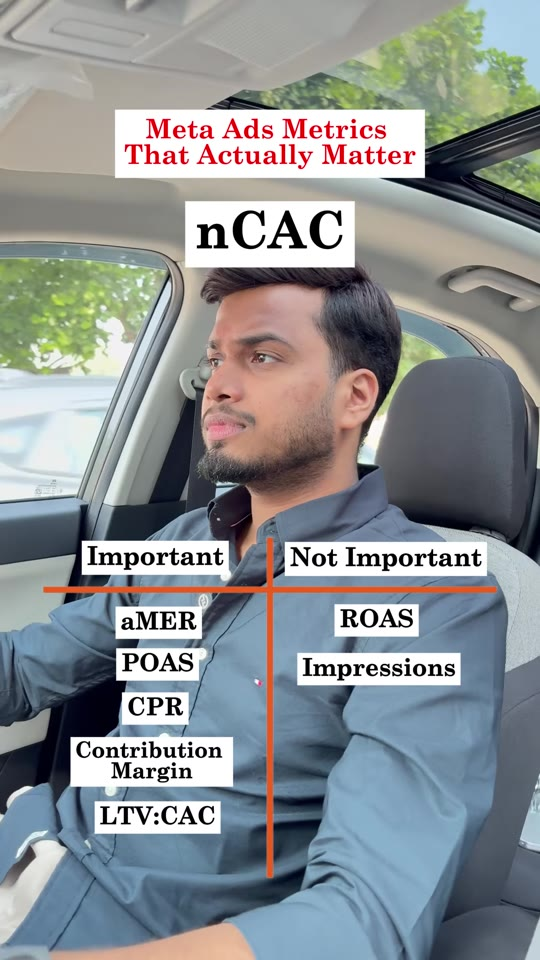

Meta-Ads · Performance-Metrics
6 Profitability Metrics That Actually Matter in Meta Ads
Library / Meta-Ads / Performance-Metrics
A performance marketing guide distinguishing dashboard vanity signals from true business profitability metrics. Explains why advertisers should move their primary decision-making away from platform-reported blended ROAS and raw impression volume toward bottom-line unit economics: aMER (Acquisition Marketing Efficiency Ratio), POAS (Profit on Ad Spend), CPR (Cost Per Result), Contribution Margin, LTV:CAC ratio, and nCAC (New Customer Acquisition Cost).

Steps
- Optimize for POAS (Profit on Ad Spend) instead of Blended ROAS: ROAS only measures top-line GMV and ignores product COGS, packaging, and processing fees. POAS calculates gross profit generated per ad dollar spent, ensuring campaigns are cashflow positive. (00:03)
- Track aMER (Acquisition Marketing Efficiency Ratio): Evaluate total new customer revenue divided by total ad expenditure across all channels to assess true acquisition incrementality. (00:02)
- Isolate nCAC (New Customer Acquisition Cost): Separate blended CAC (which includes returning customers who would have purchased organically) from first-time acquisition costs to prevent false confidence in ad performance. (00:14)
- Monitor Contribution Margin (CM): Calculate the net cash remaining after all variable costs (ad spend, payment gateway cut, fulfillment, and product cost) to confirm that scaling ad spend increases net enterprise bank balances. (00:07)
- Benchmark LTV to CAC Ratio: Monitor customer cohort value over 60, 90, and 180 days relative to acquisition cost to ensure payback periods support sustained marketing reinvestment (ideal target > 3:1). (00:09)
- Anchor on CPR (Cost Per Result) over CPMs/Impressions: Do not optimize campaigns based on cheap impression counts or CPM fluctuations; base bids and creative iteration strictly on the final conversion action (cost per purchase or cost per qualified lead). (00:05, 00:12)
Verbatim
| When | Where | Text |
|---|---|---|
| 00:00 | screen | Meta Ads Metrics That Actually Matter |
| 00:01–00:15 | screen | Important: • aMER (Acquisition Marketing Efficiency Ratio) • POAS (Profit on Ad Spend) • CPR (Cost Per Result) • Contribution Margin • LTV:CAC • nCAC (New Customer Acquisition Cost) Not Important: • ROAS • Impressions |
| — | caption | ✅ aMER (Acquisition Marketing Efficiency Ratio) ✅ POAS (Profit on Ad Spend) ✅ CPR (Cost Per Result) ✅ Contribution Margin ✅ LTV to CAC Ratio ✅ NCAC (New Customer Acquisition Cost) Note: The “not important “ metrics are not ignorable ones, they just don’t need to be on your Ads Manager Dashboard. Your profitability in advertising is what you aim for and these important metrics should be the ones on your list. |
Tools & links
- Meta Ads Manager — Campaign reporting dashboard — adsmanager.facebook.com
- Creator profile — @adsbysambhav (Sambhav Jain) — instagram.com/adsbysambhav
Try this
- Customize your Meta Ads Manager column preset: replace default Impressions and reach columns with CPR (Cost per Result), and integrate third-party order profit tracking to monitor daily POAS.
- Calculate your brand's break-even POAS threshold:
1 / Gross Margin Percentage.
Open questions
The creator classifies ROAS as "Not Important" for the Ads Manager dashboard because blended ROAS regularly masks unprofitability when margins are thin or repeat buyers inflate figures. As clarified in the caption, it remains a secondary diagnostic check rather than an operational optimization goal.